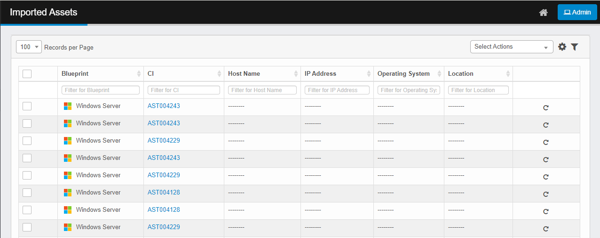
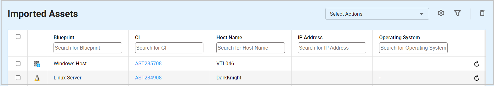

Imported Assets
Use this function to view the results of data imported during the data files import operation and move them (if applicable) to CMDB. An asset can also be rescanned through this function.
| 1. | In the navigation pane, select Discovery Scan > Imported Assets. The Imported Assets window displays. |


| 2. | Select at least one or more records. (When rescanning, the asset must have an IP address.) |
| 3. | From the Select Actions drop-down list, choose either Move to CMDB or Re-Scan. |
| 4. | From the Select Actions drop-down list, choose either Move to CMDB or Re-Scan. |
| 5. | At the prompt, click Yes. |
Related Topics
Other Functions and Page Elements